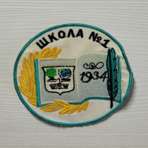

×
История герба школы №1.
К 50 летию школы, выпускники 1983 года организовали конкурс эскиза герба школы. Было много вариантов, но идея не воплотилась в жизнь.
К идее создания герба вернулись к 70-летнему юбилею , по инициативе директора школы Лебедь Ларисы Михайловны. Был объявлен очередной конкурс. Выбрали оптимальный вариант, и в школе появился герб.
В начале, это был значок, но вариант оказался не надежным, часто ломался и терялся. Тогда было принято решение, что герб будет в виде вышитой эмблемы. Сначала герб был в форме геральдического щита с изображением глобуса, дерева, и очертаний здания школы. Затем его видоизменили и он стал представлять собой круг с изображением в нем развернутой книги на одной странице который изображен первоначальный вид герба на другой год основания школы, перо, книга обрамлена с одной стороны изогнутой золотой ветвью.
 Старая эмблема
Старая эмблемаНовая эмблема